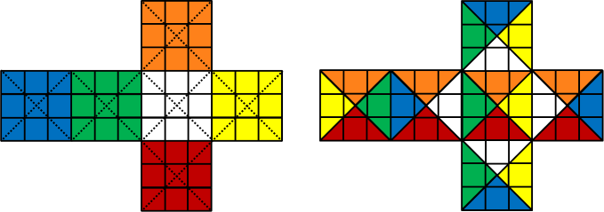
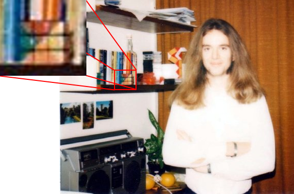
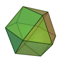

In 1980, while an undergraduate at the University of Queensland in Australia, I devised a coloring of the Rubik's cube that fixed the orientation of the center pieces without having to resort to drawing little pictures on each of the pieces. It has the advantage of using only the color stickers that come with the Rubik's cube. All you have to do is use a razor blade to divide the corner and center stickers into triangles, peel them off gently, and restick them in a different way. The image below shows the original Rubik's cube unfolded at left with the cuts shown by dotted lines. On the right we see my new coloring. The secret is this: What used to be the white face (for example) is now surrounded by white triangles, and similarly for all of the other colors.
I remember writing it up and getting it published in a popular Rubik's cube newsletter at the time, but I can't remember which one and I can't find any trace of it online. (It wasn't David Singmaster's Cubic Circular, apparently.) The only evidence that I have is a photo taken during the 1981-1982 academic year showing a much younger version of me in my room in the International House at Warwick University in England, with my Rubik's cube clearly on the shelf beside me.
I called this the cuboctahedral coloring of Rubik's cube because the pattern of squares surrounded by triangles reminded me of the cuboctahedron. (The following animated gif of a cuboctahedron is from Wikimedia Commons.)
